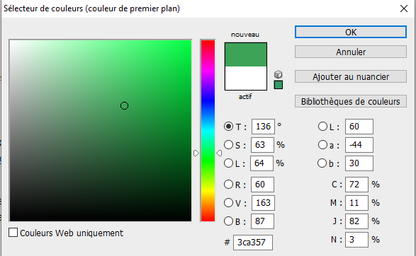

Chapitre 7 – Photographie numérique
Compression et traitement d’image
A Compression d’image
Chaque image numérique possède un format. Le format définit la manière dont les données sont écrites et compressées. Les formats courants en prise de vue numérique sont le JPEG (compressé) et le RAW (format brut, non compressé). Il existe aussi des formats adaptés au Web (JPEG, GIF, PNG), à l’impression (TIFF), etc.
Consigne : réponds aux questions suivantes en t’appuyant sur les deux documents proposés.
Le Monde – Photographier en RAW : une fausse bonne idée ? Fiche technique : les formats d’images
L’article du Monde est susceptible d’être réservé aux abonnés.
À ton avis, pourquoi compresse-t-on les images numériques ?
Pour permettre une perte de poids à l’image, l’image compressée subit quelques modifications. Donne 3 exemples de modifications.
B Traitement d’image
Nous avons vu lors de la première séance la notion de pixel : un pixel correspond à une case, la composante la plus petite d’une image, à laquelle on associe une couleur. Cette couleur est générée par un code RVB (rouge, vert, bleu).
Le code 60, 163, 87 correspond à la couleur verte représentée ci-dessous :

Pour modifier une image dans sa totalité ou partiellement, il faut modifier le code RVB des pixels concernés. Pour cela, on utilise des programmes informatiques.
Récupérer les fichiers de travail
Nous allons tester quelques programmes sur l’image ci-dessous (image.jpg). Télécharge l’image et les programmes dans un même dossier, puis ouvre chaque programme avec l’éditeur Python utilisé en classe. Les programmes utilisent la bibliothèque Pillow (PIL).
image.jpg (960 × 540 pixels).- image.jpgl’image à traiter
- code_rvb_pixel.pyprogramme 1
- modification_pixel.pyprogramme 2
- negatif.pyprogramme 3
- noir_et_blanc.pyprogramme 4
- Tout télécharger (.zip)les images et tous les programmes de la séance

Programme 1 : code_rvb_pixel.py
Lit chaque pixel de l’image et affiche son code RVB. (Il affiche plus de 500 000 lignes : laisse-le tourner jusqu’à l’affichage de « fin ».)
from PIL import Image
img = Image.open("image.jpg")
largeur_image=950
hauteur_image=540
for y in range(hauteur_image):
for x in range(largeur_image):
r,v,b=img.getpixel((x,y))
print("rouge : ",r,"vert : ",v,"bleu : ",b)
print("fin")Programme 2 : modification_pixel.py
Modifie le code RVB de chaque pixel, puis affiche l’image.
from PIL import Image
img = Image.open("image.jpg")
largeur_image=950
hauteur_image=540
for y in range(hauteur_image):
for x in range(largeur_image):
r,v,b=img.getpixel((x,y))
n_r=v
n_v=b
n_b=r
img.putpixel((x,y),(n_r,n_v,n_b))
img.show()Teste et explique chacun de ces deux programmes.
Programme 3 : negatif.py
Modifie le code RVB de chaque pixel, puis affiche l’image.
from PIL import Image
img = Image.open("image.jpg")
largeur_image=950
hauteur_image=540
for y in range(hauteur_image):
for x in range(largeur_image):
r,v,b=img.getpixel((x,y))
img.putpixel((x,y),(255-r,255-v,255-b))
img.show()Teste et explique le programme.
Programme 4 : noir_et_blanc.py
Modifie le code RVB de chaque pixel, puis affiche l’image.
from PIL import Image
img = Image.open("image.jpg")
largeur_image=950
hauteur_image=540
for y in range(hauteur_image):
for x in range(largeur_image):
r,v,b=img.getpixel((x,y))
gris = int(0.2125 * r + 0.7154 * v + 0.0721 * b)
img.putpixel((x,y),(gris,gris,gris))
img.show()Teste et explique le programme.
Sur chacun des programmes testés, on remarque sur un bord de l’image qu’une partie de l’image n’est pas traitée. Que doit-on modifier pour que cela fonctionne correctement ?
C Testons le photomontage
Le photomontage consiste à assembler plusieurs images en une seule. Cette partie se réalise avec le logiciel GIMP, selon la consigne donnée en classe.
On peut aussi réaliser un photomontage avec un programme Python : montage.py réduit de moitié l’image batman.png (une image à fond transparent), puis la colle sur image.jpg aux coordonnées (350, 100).
from PIL import Image
img = Image.open("batman.png")
taille=img.size
img=img.resize((int(taille[0]/2.0),int(taille[1]/2.0)),Image.LANCZOS)
background = Image.open("image.jpg")
background.paste(img, (350, 100), img)
background.show()- batman.pngl’image à fond transparent à coller
- montage.pyle programme de photomontage

Compare le photomontage réalisé avec GIMP et celui réalisé avec le programme : quels sont les avantages et les limites de chaque méthode ?
+ Pour aller plus loin : du bruit dans l’image
Ces deux programmes remplacent des pixels par des couleurs tirées au hasard (fonction randint).
- random_bandes.pydu bruit sur les 50 premières et les 50 dernières lignes de l’image
- random_total.pydu bruit sur toute l’image
Que se passe-t-il quand on modifie les valeurs de hauteur_image et de la deuxième boucle de random_bandes.py ? Fais le test.
Ne nomme jamais un de tes programmes random.py : Python le confondrait avec sa propre bibliothèque random et le programme ne fonctionnerait plus.